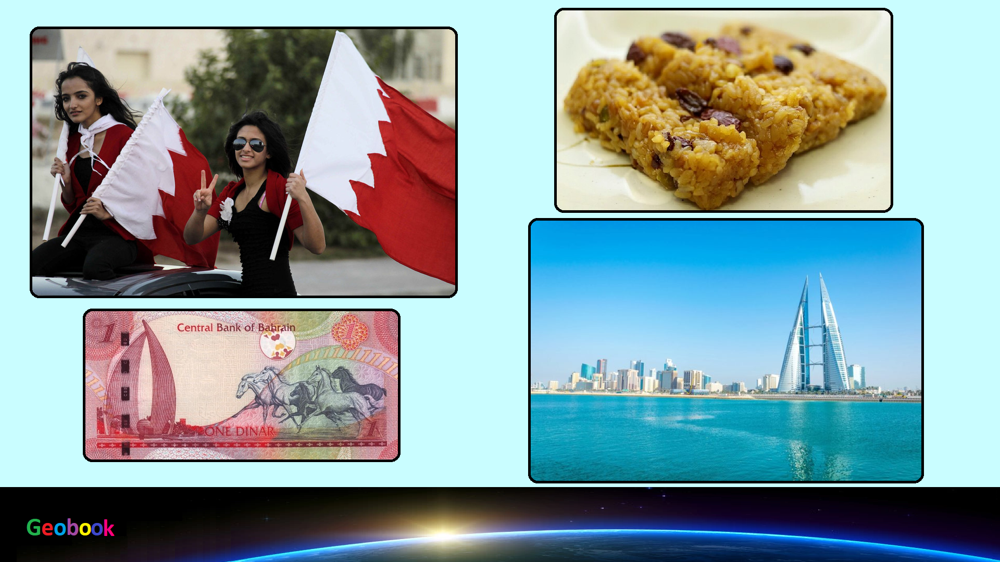

____
Валюта
Валюта в Бахрейна - Бахрейнский динар.
Курс: 1 Бахрейнский динар - 196,49 рублей (7 февраля 2021).
Появился Бахрейнский динар в 1966 году. Находятся банкноты номиналом ½, 1, 5, 10 и 20 динаров, а также монеты — 5, 10, 25, 50, 100 и 500 филсов.
История
До 28 апреля 1959 года в стране имела хождение индийская рупия, кроме того, здесь использовались британские соверены и талер Марии-Терезии, пока их не заменила выпущенная для стран Персидского залива рупия Персидского залива.
Рупия Персидского залива была привязана к индийской рупии. Когда в 1965 году индийская рупия обесценилась, то упала и стоимость рупии Персидского залива. После этого правительство Бахрейна решило ввести в обращение свою собственную валюту.
Бахрейнский динар был введён в обращение 11 октября 1965 года, заменив рупию Персидского залива, в размере 10 рупий = 1 динар. Со следующего года Бахрейнский динар стал денежной единицей княжества Абу-Даби, пока в 1973 году ей на смену не пришёл дирхам ОАЭ. Выпуском бахрейнской валюты сначала занимался Валютный совет Бахрейна (с 1964 по 1973), а затем Валютное агентство Бахрейна (с 1973-го года), которое в 2006-м году было переименовано в Центральный банк Бахрейна
Курс динара привязан к доллару США в соотношении 1 динар = 2,6596 доллара.
____
